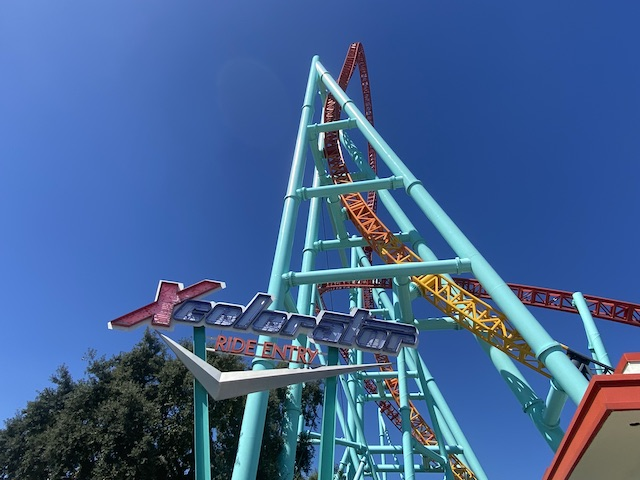

| |
Knotts Boysenberry Festival 2024
 All right. We have returned to Knotts Berry Farm. It's really been a while since our last visit, which was the 2022 Boysenberry Festival. Yeah. We had a big gap due to....both that visit being kind of sucky, as well as 2023 just bombing for us. So we're back! But before we go to the 2024 Boysenberry Festival, we're here for a quick Christmas visit. I'm throwing this in here because there's too few photos for that to have been its own update, while still wanting to show parts of this day off.
All right. We have returned to Knotts Berry Farm. It's really been a while since our last visit, which was the 2022 Boysenberry Festival. Yeah. We had a big gap due to....both that visit being kind of sucky, as well as 2023 just bombing for us. So we're back! But before we go to the 2024 Boysenberry Festival, we're here for a quick Christmas visit. I'm throwing this in here because there's too few photos for that to have been its own update, while still wanting to show parts of this day off.
*Sigh* Montezoomas Revenge, which closed in January 2022 to be ready for its makeover in Summer 2023. It's nearly 2024, and it's STILL closed. What the hell is going on!?
OK. So here's all that I know about Montezoomas Revenge. Apparently, when Kumbak was taking out the loop for the makeover, they didn't realize that they were supposed to deconstruct it in pieces, and just welded it off, which completely DESTROYED the loop. So this caused people to think that Kumbak completey destroyed the ride, and of course, the "Demolish-Happy" enthusiasts began ringing the bell, declaring it dead. And while I do genuinely hate the "Demolish-Happy" attitude of many enthusiasts, in this case, it genuinely seemed likely that Cedar Fair would just pull the plug on the Montezoomas Revenge project (and sue Kumbak for f*cking up so badly, just like they sued Togo for f*cking up Windjammer). This time, I actually believed them, but hoped I was wrong. And sure enough, I was. The project is still on and has just been delayed to reopen in Summer 2025. I honest to god want to say "Thank you" to Knotts Berry Farm for not giving up on Montezoomas Revenge despite Kumbak f*cking up the deconstruction so badly (I am SHOCKED that they are still in on the project. I was CERTAIN that if Montezooma was gonna be saved, they wouldve found a different manufacter to take over). With how many Schwarzkophs are dying (I am PISSED they closed Mindbender in Canada. Honestly, if they had announced a final season to ride it, I would've made a spontaneous trip to Edmonton to ride it cause that ride looked REALLY good), I genuinely appreciate you taking the effort to keep this one alive. =)
With how long my last visit was, I'm overdue for ALL of the Knotts coasters.
*Sigh*I was so eager to get back here that I forgot just how mobbed this place gets the week after Christmas. Yeah. I f*cked up in picking today (I know I was forced to pick today due to my work schedule, but still).
OK. This was stronger than I rememer. =)
So because this day was so mobbed, I couldn't ride anything aside from HangTime (and that was only after braving a FAR TOO LONG line just because I was desperate to ride ANYTHING). So we sort of just spent the day wandering around. Oh, and say goodbye to these random Camp Snoopy rides.
So aside from the one ride, much of our December day was Jason reuniting with a lot of his old co-workers from back when he worked here (BTW, the drama regarding the wrongful termination is settled. The hatchet is officially buried and that chapter is closed). And after reuniting with one of his co-workers, she gave us this wood carving. Aww. Thanks. It's really appreciated (even though we got it the day after Christmas. But we'll be sure to hang it up next Christmas). Thanks for that. We really appreciate that and are sorry about your husband (Fuck cancer).
All right. Fast foreward to Spring 2024. And yeah. It's Boysenberry Festival time! As noted by the billboard.
 Assaulting people is bad. M'kay.
Assaulting people is bad. M'kay.
Oh no! The pink McDonalds right by Knotts closed! Now where I am gonna get average fast food at grossly overpiced greedflation prices?
Hmm. There's something different about Montezoomas Revenge. But I just can't put my finger on it.
Another thing they enacted since my last visit was their Chaparone policy. No minors (anyone under 16) can be in the park with adult supervision. Eh....I get why they did it. Fights caused by stupid teens are unacceptable. But.....this just rubs me the wrong way. Partially because I remember being that age and visiting parks unsupervised, and I was fine. and trust me. If they enacted this back then, I would've been pissed.
Yeah. It's the best time of the year to be at Knotts Berry Farm.
 Now this is what the Boysenberry Festival is all about. =)
Now this is what the Boysenberry Festival is all about. =)
 So with Knotts continously increasing the amount of food served as Boysenberry Festival, Jason decided to spontaneously buy us 2 tasting cards. Thanks man. Now we have to come back twice to finish up both cards. =)
So with Knotts continously increasing the amount of food served as Boysenberry Festival, Jason decided to spontaneously buy us 2 tasting cards. Thanks man. Now we have to come back twice to finish up both cards. =)
*Sigh* Stupid me forgot to realize that its Spring Break, and so the park is MOBBED!!! Ugh. Well, at least this visit is far more about food than rides.
OK. First up, Boysenberry Chicken Tikka Masala. This honestly, was one of the items I was most intrigued in after peeking at the Boysenberry Festival 2024 Menu. And....I'm torn. On the one hand, this is VERY good. Very tasty Chicken Tikka Masala. However, the boysenberry aspect was pretty mild and honestly, barely noticeable. I still really enjoyed it, and at one of their more normal food festivals, would be praising this. But it wasn't the best fit for the Boysenberry Festival.
Another upside of the Boysenberry Festival. ALCOHOL!!! It's included on the tasting card and so overpriced normally that when you get it included, TAKE ADVANTAGE OF IT!!! =)
My booze of choice would be the Boysenberry Shortbread Cookie Ale. Think of the regular Boysenberry Beer, only with a sweet fruity nutmeg taste of a shortbread cookie. I REALLY REALLY liked this. Part of me hopes that they serve this yearround, until I remember that I don't normally buy booze in parks due to the price and my finances. Two drunken thumbs up, =)
"Hey. You're not Charlie Brown. But I'm too drunk off Boysenberry Shortbread Cookie Ale to care!"

We have to ride something. And it's been so long. I just have to.
*Sigh* I normally would NOT wait this long for it. But....I have to ride SOMETHING major today. And this has been closed for so long, and it's my favorite coaster at Knotts. I just have to! At least I have a podcast to listen to in line to make it tolerable.
That launch is still just as good and packs a punch! =)
Ooh! Boysenberry Candle! Blugh. It tastes like wax. =(
Getting back to the food, we're now trying the Boyenberry BBQ Beef Barbacoa on Mac & Cheese. Another Mac & Cheese dish! I am obligated to try this! =) It's obviously good. Though the BBQ Beef Barbacoa (it's basically just Pulled Beef) doesn't exactly mix with the Mac & Cheese. Felt kind of like oil & water. Also.....why is Knotts continuing to experiment with Mac & Cheese when they already perfected it? The Boysenberry Habanero Mac & Cheese from 2019 was amazing and easily my favorite Mac & Cheese item they've served. Just bring that back please.
And now, it's time for dessert. Boysenberry Bundt Cakes! It tastes exactly like a Nothing Bundt Cake, if they came out with a boysenberry flavor. While not my favorite flavor, it still was REALLY good (as all bundt cakes are) and was a PERFECT fit for the Boysenberry Festival (Nice marketing for Nothing Bundt Cakes as well).
"Shh! Don't tell Kevin that I'm Sally's new sweet baboo!"
 So the big new addition to Knotts Berry Farm that happened in 2023 was....a redesigned Fiesta Village. I never thought anything of this when it was announced, but I have to say. It looks GREAT and they did a FANTASTIC job! =)
So the big new addition to Knotts Berry Farm that happened in 2023 was....a redesigned Fiesta Village. I never thought anything of this when it was announced, but I have to say. It looks GREAT and they did a FANTASTIC job! =)
I know I'm often not a huge fan of new paintjobs. But the paintjob on La Revolution is FANTASTIC!!! Giant improvement!
Of course, the ride we're actually riding is Hat Dance (Nice new sign BTW).
Unfortunately, we can't get this to spin like crazy. But we still had some fun.
"I'M GONNA SPIN THIS THING SO FAST IT CAUSES BOYSENBERRY VOMIT TO FLY EVERYWHERE!!!" =P
OK. Montezoomas Revenge is back to having all the deconstruction done. And this time, I actually see progress being made. Look foreward to seeing it rebuilt back up.
Because my sweet tooth continues to call, the Boysenberry ICEE Float. Boysenberry ICEE? Really good! Boysenberry Soft Serve? Fantastic! The two together....eh. Good, but....I felt like they didn't mix well together. Again, very much like oil and water. Ice cream doesn't work with an ICEE the same way it does with soda.
Final food item for today would be the Boysenberry Poutine. Now this was really intriguing. I've had Americanized flavored poutine before. And between this, and the flavored poutine I upon stumbling across a Poutine resteraunt in Anaheim (Very happy to learn that they have one in Long Beach. Gotta go back there sometime), I really like poutine (I still have yet to try regular plain poutine in Canada. Next visit to the country). Not only was it really good. But it also....had a boysenberry taste to it and felt very much like an old-school item that they'd have at the earlier Boysenberry Festival. One of my favorite items from the festival. 2 thumbs up.
OK. We're back for Boysenberry Festival Visit #2. Still have to go back to use up that 2nd tasting card.
Another visit, another day to try more boysenberry concoctions.
To start off this vist...BOOZE!!! Specifically, the Boysenberry Watermelon Hard Seltzer. This was really good. Think of a White Claw, if they came out with a Boysenberry Watermelon Twist flavor. That's basically this drink. If that sounds good to you, then this drink is for you. =)
That tasting card isn't paying itself off! So get down in there and mine some boysenberries, boy!
Moving on, we have the Double Stuffed Baked Potato with Boysenberry BBQ Pulled Pork. This was....interesting. Not the biggest pulled pork fan. But it was good. Also....mashed potatoes are better than baked potatos. They're good, but....it's just easier to eat mashed potatoes. Also....I think drowning my potato in butter and sour cream sort of overpowered the subtle boysenberry taste it had.
So the one ride we rode today wasn't even a coaster. But rather Calico River Rapids (the others who rode other stuff earlier before I got here). Hey, riding with friends always makes it much better. =)
 And finally, we have the Boysenberry Gourmet Cookie with Boysenberry Soft Serve A la Mode. The Boysenberry Soft Serve is really good. Big fan of that. But I was REALLY impressed with the cookie. It did taste....very chewey and well baked. Better than I expected.
And finally, we have the Boysenberry Gourmet Cookie with Boysenberry Soft Serve A la Mode. The Boysenberry Soft Serve is really good. Big fan of that. But I was REALLY impressed with the cookie. It did taste....very chewey and well baked. Better than I expected.
We were supposed to have a 3rd visit to finish off the 2nd tasting card since....I had to leave early due to....I had to go to work. Unfortunately, that never happened since....April was busy as f*ck and the time was taken by other bullsh*t. Very bummed to have some wasted items. Missed out on some old-school favorites from past Boysenberry Festivals (the Boysenberry Wings, Elote, & Cobbler) =(
And that was the Boysenberry Festival 2024. While not as good as previous years (2019 still remains the best year for the Boysenberry Festival), it still was a big improvement from the 2022 Festival. Both due to better food (while not everything here was perfect, the food definately was an upgrade from 2022), let alone the other reasons, such as having the ability to go on not mobbed days and crowds being FAR MORE MANAGABLE (provided you don't go during Spring Break) and no upsetting drama regarding Jason (which again, was resolved BTW). While I do wish Knotts would bring back some more of their old school classics for 2025, I still look foreward to see what they do for next year.
Home
|